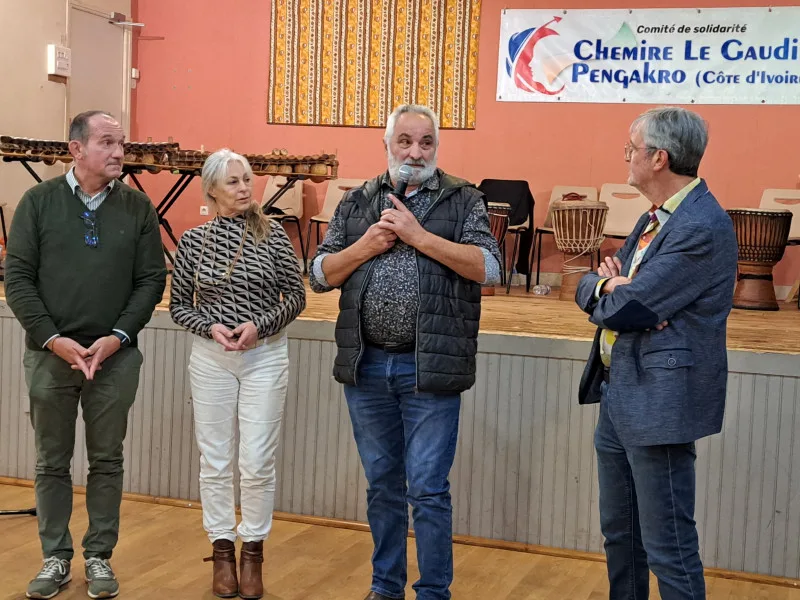

Partenariat
Les projets naissent des besoins exprimés à Pengakro, portés sur place par la MUDEP, dans une relation Nord/Sud d'égal à égal.
Qui sommes-nous ?
Une association de bénévoles sarthois qui, depuis 2006, construit avec les habitants de Pengakro des projets utiles et durables.
Notre histoire
Tout part d'une démarche de Pengakro : en 2006, la commune ivoirienne écrit à Chemiré-le-Gaudin pour proposer un jumelage. Le conseil municipal l'accepte le 21 avril 2006, sans engagement financier, et l'association « Comité de jumelage Chemiré-le-Gaudin / Pengakro » est créée dans la foulée, à l'initiative de Marcel N'Damité, son président fondateur.
En 2016, les deux communes signent une convention de coopération décentralisée dont la mise en œuvre est confiée au comité. En 2023, le comité devient Comité de Solidarité Chemiré-le-Gaudin – Pengakro.

Frise chronologique
Pengakro propose un jumelage à Chemiré-le-Gaudin. Le conseil municipal accepte le 21 avril 2006 et le comité de jumelage est déclaré en préfecture de la Sarthe (publication au Journal officiel le 11 novembre 2006).
Construction d'un bâtiment pour que la sage-femme dispose d'une salle distincte de l'infirmerie. Les lits sont offerts par l'association Bokalé du Mans.
Participation à l'adduction d'eau potable depuis le château d'eau ; maillots et chaussures pour l'équipe de football.
Une bibliothèque ouverte aux élèves et aux habitants, gérée par le directeur de l'école.
Collectés auprès d'écoles, du Rotary Club de Château-du-Loir et de particuliers, puis acheminés jusqu'à Pengakro.
Le 23 février, le conseil municipal de Chemiré-le-Gaudin signe une convention de coopération décentralisée avec Pengakro et en confie la mise en œuvre au comité.
Quatre ans de travail commun avec la MUDEP pour bâtir un marché abrité pour les vendeuses de Pengakro et des villages voisins.
Fin octobre – début novembre, une délégation de Chemiré se rend à Pengakro pour l'inauguration.
Le comité de jumelage devient comité de solidarité, afin de pouvoir solliciter l'Agence des micro-projets. Le 23 septembre, grande fête au village à Chemiré.
Depuis le 1er octobre, les producteurs déposent leurs récoltes de cacao et de café dans les nouveaux magasins.
Soirée africaine des 20 ans le 7 mars ; une délégation de quatre personnes passe dix jours à Pengakro pour l'inauguration des magasins.
Nos valeurs
Elles reprennent les objectifs inscrits par le comité dans son histoire et ses statuts.
Les projets naissent des besoins exprimés à Pengakro, portés sur place par la MUDEP, dans une relation Nord/Sud d'égal à égal.
Soutenir un développement durable et solidaire du village, dans le temps long.
Favoriser les échanges sociaux, culturels, économiques et touristiques entre les deux communes et les villages voisins.
Contribuer, à notre échelle, à la paix dans le monde par l'amitié entre les peuples.
Fonctionnement
Déclarée en préfecture de la Sarthe en 2006, son siège est à la mairie de Chemiré-le-Gaudin. Elle réunit chaque année ses membres en assemblée générale.
Le conseil d'administration, renouvelé lors de l'assemblée générale, élit un bureau qui suit les projets et prépare les manifestations.
Adhésions, recettes des manifestations, fonds propres, bénévolat et subventions (commune, Département de la Sarthe, Région, Agence des micro-projets).
Bureau et conseil d'administration
Composition publiée sur le site du comité. À vérifier après l'assemblée générale de novembre 2026.
Statuts
Tel que publié au Journal officiel (annonce n° 1088 du 11 novembre 2006) : « développer des relations entre Chemiré-le-Gaudin et Pengakro, ainsi que les villages voisins, dans le cadre de la coopération internationale décentralisée, dans les domaines culturels, sanitaires, sociaux, économiques, éducatifs, sportifs ou touristiques, dans une logique de développement durable ».
Adhérer, donner, prêter main-forte lors d'une soirée ou faire connaître le comité : chaque geste compte pour faire vivre ce partenariat entre deux villages.